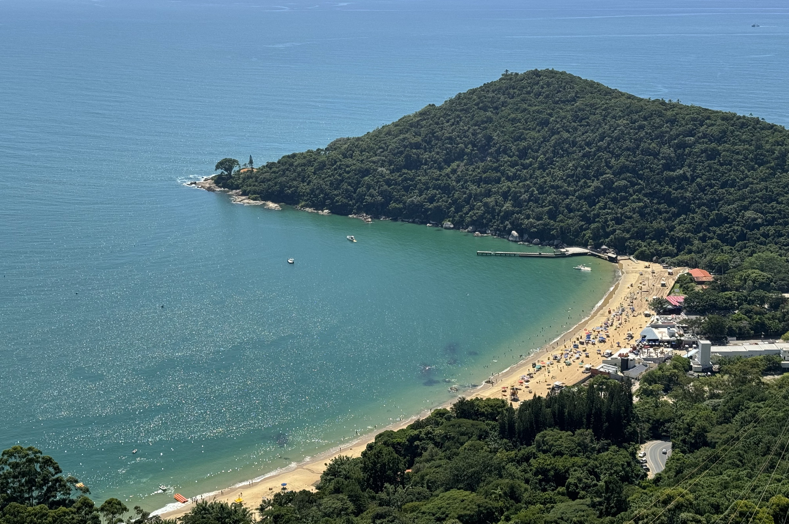

Praias do Brasil
O Brasil é um dos países tropicais conhecidos pelas praias mais bonitas do planeta. Confra a melhores praias para esse verão.
Jericoacoara

Jericoacoara é uma praia localizada na vila homônima, no município de Jijoca de Jericoacoara, no estado do Ceará, no Brasil. Está localizada a 295 km a oeste da capital do estado, Fortaleza. Foi eleita em 1994 pelo jornal estadunidense The Washington Post uma das dez praias mais bonitas do planeta.Em 2014, foi eleita pelo Huffington Post a quarta melhor praia da Terra.É um dos locais mais frequentados por praticantes de windsurfe no país. A praia é parte integrante do Parque Nacional de Jericoacoara.
Atrações
- Pedra Furada.
- Duna do Pôr do Sol.
- Igreja Nossa Senhora da Consolação.
- Serrote.
- Farol de Jericoacoara.
- Campo de Dunas.
Baía do Sancho

Baía do Sancho é uma baía de águas claras localizada a oeste do Morro Dois Irmãos e a leste da Baía dos Golfinhos, no arquipélago de Fernando de Noronha, no estado de Pernambuco, Brasil.
Atrações
Praia das Laranjeiras

Praia das Laranjeiras é uma praia localizada na cidade de Balneário Camboriú, no estado de Santa Catarina, é uma praia de pequena extensão, com apenas 750 metros, rodeada pela Mata Atlântica e banhada pelo Oceano Atlântico.
Atrações
- Parque Unipraias Camboriú, Parques de diversões e temáticos.
- Molhe, Monumentos e estátuas.
Praia da Ilha do Prumirim

Praia da ilha de Prumirim é uma praia de tombo com extensa faixa de areia de aproximadamente 1,2 Km. Bem rústica e arborizada, com costeiras rochosas.
Atrações
- Cachoeira na beira da rodovia.
- Quiosques e praia.
- Quiosques.